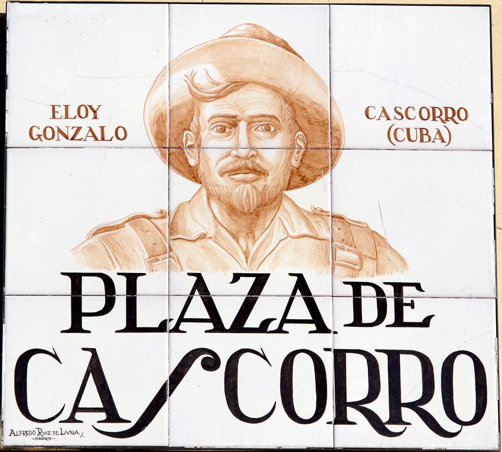

Preparing historical trajectories of development and environment...
Growth & Earth
Historical trajectories of development and environment
An interactive toolkit for looking back at the many wakes left by economic growth, human development, and environmental change. The platform follows multiple historical trajectories across countries, making visible both the achievements and the costs that emerge in growth's wake.
Infante-Amate, J., Travieso, E. & Aguilera, E. (2025). “Green growth in the mirror of history.” Nature Communications, 16, 3766. DOI
Travieso, E., Infante-Amate, J. & Aguilera, E. (2025). “The history of a +3°C future: Global and regional drivers of greenhouse gas emissions (1820–2050).” Global Environmental Change, 92, 103009. DOI
Infante-Amate, J., Travieso, E. & Aguilera, E. (2024). “Unsustainable prosperity? Decoupling wellbeing, economic growth, and greenhouse gas emissions over the past 150 years.” World Development, 184, 106754. DOI
For more information on data sources, methodology, and citations, see About.
Growth & Earth development & environment since 1750
2022
—
—
Pop
—
GDP pc
—
HDI
—
GHG
—
Cropland
—
MFA
—
Population (M)
GDP per capita ($PPP)
HDI
GHG emissions (Mt)
Cropland (Mha)
Material extraction (Mt)
GHG / GDP (kg/$)
Cropland / GDP (ha/k$)
MFA / GDP (kg/$)
2022
2022
Explore settings
Settings▼
Unit
Compare
Draw
Values
Scale
Panels
Y axis
Indicator▼
Gas type
Total CO₂
Total GHG
CO₂ decomposed
GHG decomposed
Flow typeMaterial
Total
All decomposed
Type
Land type
Total agricultural area
All decomposed
Type
Red List Index (0–1, where 1 = all species least concern)
Countries▼
Y axis
/ X axis
From
To
Chart
X axis
Y axis
Size
Axes
Scope
View
Chart
Y axis
Emission type
Year window
Select an analysis type
Choose countries and analysis mode
What if?
Emissions are people × income × the CO2 it takes to make a dollar. Move the three dials and read what the carbon budget says.
Loading the What if? data…
The What if? data could not be loaded.
About Growth & Earth
Since the industrial revolution, modern economic growth has sustained ever larger populations and extraordinary progress in education and health, while also transforming the planet through greenhouse gas emissions, cropland expansion, and raw material extraction. Growth & Earth is a place to explore this uneven history of global development and environmental change. It compiles country series on economic development, resource use, greenhouse gas emissions, material flows, land use, biodiversity, and other environmental impacts from the eighteenth century to the present.
Conceptual frame
The wake metaphor starts from a historical intuition: there is no single road of development. Countries, regions, and the world economy leave multiple traces behind them. The future is uncertain from the deck of the ship, but looking backward we can see the direction of travel, the bends, the accelerations, and the points where the record becomes harder to reconstruct.
This is why historical perspective matters. The farther back the wake extends, the more uncertain some estimates become, yet the retrospective pattern remains more visible than any path projected forward. The image is deliberately ambivalent: in the wake of growth we find longer lives and higher human development, but also greenhouse gas emissions, material extraction, land transformation, and biodiversity loss.
What the viewer shows
The viewer links country profiles, maps, rankings, time-series comparisons, decoupling patterns, and decomposition tools. Together they allow readers to follow how GDP, HDI, population, emissions, material flows, land use, and biodiversity indicators moved together or apart across two centuries of global change.
Team
Juan Infante-Amate
Universidad de Granada
Environmental & Economic History
Emiliano Travieso
Universidad Carlos III de Madrid
Economic & Environmental History
Eduardo Aguilera
CSIC · IEGD
Agroecology & Climate Science
Origins and future directions

The project began under the working name Cascorro, after the Plaza de Cascorro, a lively square in the historic centre of Madrid. Over the course of several research meetings held in Madrid, the three members of the team ended up —more often than not— wrapping up the day with a beer and conversation in this square. What began as an informal meeting point became the place where the project was conceived and gradually took shape.
The title, Growth & Earth, names the two sides of the story: modern economic growth, and the planet that has sustained it and been transformed by it. The image of a wake on the sea, from Machado’s verse, stays with the project as its Spanish subtitle, Estelas del crecimiento: development has no single predefined road, but a plurality of paths that can be reconstructed historically. Looking back, those wakes reveal gains in human development as well as greenhouse gas emissions, material pressures, land-use change, and biodiversity losses.
Growth & Earth is an ongoing research initiative. Future work will expand the platform with new indicators, updated datasets, and papers that analyze the interplay between environmental pressures and socioeconomic development in historical perspective, deepening our understanding of long-term decoupling patterns, regional trajectories, and the environmental costs of growth.
Data sources
All data displayed on this platform is derived from publicly available datasets. Each indicator page in the Methodology tab documents the original source, coverage, and required citation. If you use data or visualizations from Growth & Earth in your work, please cite both the original data providers and the relevant publications by Infante-Amate, Travieso & Aguilera listed in the Methodology section.
Data Sources & Methodology
This platform integrates multiple datasets to provide a comprehensive view of global environmental and human development trends. Select an indicator below to view its detailed methodology, sources, coverage, and citation requirements.
GDP — Maddison Project Database
Gross Domestic Product per capita in long-run perspective
Coverage
199 countries
Year range
1750–2024
Unit
2011 international $ (PPP)
Resolution
Annual
Description
The primary source is the Maddison Project Database (2023 update), the most comprehensive long-run comparative economic dataset available. Originally initiated by Angus Maddison, the database is now maintained by a team at the University of Groningen. It provides GDP per capita estimates in 2011 international dollars (purchasing power parity) for a wide range of countries, in many cases extending back to the 18th century and earlier.
The 2023 update incorporates new benchmark estimates and methodological improvements, offering the most reliable picture of the long-run evolution of the world economy. For this platform, the Maddison series are extended with World Bank World Development Indicators (WDI) for the most recent years not yet covered by the Maddison release.
Gap-filling methodology
For countries and years not covered by the Maddison Project Database, GDP per capita is estimated using a hierarchical approach: (1) growth rates from the World Bank WDI are applied to extend existing series forward; (2) for historical gaps, regional growth patterns (population-weighted) are applied to anchor the country’s nearest known value; (3) for countries with no data, the population-weighted regional average is assigned.
How to cite
Bolt, J. & van Zanden, J.L. (2024). “Maddison style estimates of the evolution of the world economy: A new 2023 update.” Journal of Economic Surveys. doi:10.1111/joes.12618
Suggested citation: “GDP data from the Maddison Project Database 2023 (Bolt & van Zanden, 2024), extended with World Bank WDI.”
Human Development Index (HDI)
Standard HDI (UNDP) and Augmented HDI (Prados de la Escosura)
Coverage
199 countries
Year range
1870–2024
Unit
Index 0–1
Variants
HDI, Augmented HDI (with democracy), HDI without income (HDIni)
The Human Development Index (HDI)
The Human Development Index (HDI) was introduced by the United Nations Development Programme in 1990 as part of its first Human Development Report. Conceived by economists Mahbub ul Haq and Amartya Sen, it was designed to shift the focus of development economics beyond income alone, providing a summary measure of average achievement in three key dimensions of human development:
Health
Life expectancy at birth.
Education
Mean years of schooling & expected years of schooling.
Standard of living
GNI per capita (PPP$).
The HDI is the geometric mean of normalized indices for each dimension, producing a value between 0 and 1. The UNDP publishes HDI values annually for over 190 countries, with data available from 1990 to 2023 in the latest Human Development Report (UNDP, 2025).
The HDI has become the world’s most widely used composite indicator of human development, providing a counterpart to purely economic measures such as GDP per capita. For more information, see the UNDP Human Development Data Center.
The Augmented Human Development Index (AHDI)
The AHDI, proposed by Prados de la Escosura (2023), extends the standard HDI in two important ways: (1) it adds a fourth dimension — liberal democracy — and (2) it provides historical estimates going back to 1870, far beyond the UNDP’s 1990 starting point. The AHDI is the geometric mean of four normalized components:
Income
GDP per capita (GK$1990). Kakwani transform with Mo = $100, M = $47,000.
Life expectancy
Years at birth. Kakwani transform with Mo = 20, M = 85.
Education
Mean years of schooling. Kakwani transform with Mo = 0, M = 15.
Liberal democracy
V-Dem v2x_libdem index, used directly on a 0–1 scale.
Each component is normalized using Prados’ non-linear Kakwani transformation, which captures diminishing returns — improvements at low levels count more than at high levels:
I = [log(M − Mo) − log(M − x)] / log(M − Mo)
where x is the actual value, Mo is the minimum, and M is the maximum. The liberal democracy index from V-Dem (0–1) is used directly without transformation.
The composite AHDI is:
AHDI = (IIncome × ILE × IEdu × ILDI)1/4
Prados published raw component values for 162 countries at 24 benchmark years (1870, 1880, …, 2010, 2015, 2020) in the Economic History Review. This constitutes the most comprehensive long-run dataset on human development currently available.
Component goalposts
Component
Minimum (Mo)
Maximum (M)
Transform
Income (GDP pc GK$1990)
$100
$47,000
Kakwani (log)
Life expectancy (years)
20
85
Kakwani (log)
Education (mean yrs schooling)
0
15
Kakwani (log)
Liberal democracy (V-Dem)
0
1
Direct (no transform)
Processing pipeline for this dashboard
The original datasets cover different numbers of countries with unbalanced panels: Prados provides 162 countries across 24 sparse benchmark years (1870–2020), while the UNDP covers 206 entities but only from 1990. For this dashboard, these sources were merged, extended, and gap-filled into a complete panel of 199 UN-recognized countries × 155 years (1870–2024).
Step 1 — Annual interpolation of benchmarks: Prados published raw component values at 24 benchmark years. We linearly interpolated the raw components to annual frequency within each country’s data range, then applied the Kakwani transformation formulas and geometric mean. The reconstructed AHDI was verified against Prados’ published values (maximum absolute error < 0.0001).
Step 2 — Extension to 2024: Prados’ series ends in 2020. We extended AHDI to 2024 by applying year-on-year growth rates from the UNDP HDI components (life expectancy, education, income) and V-Dem (liberal democracy). The UNDP HDI series ends in 2023; we project to 2024 by applying the 2022→2023 growth rate.
Step 3 — Backcasting HDI before 1990: To extend HDI before 1990, we exploit the fact that three of Prados’ four components (income, life expectancy, education) map onto the UNDP’s three dimensions. We compute a 3-component Prados index (excluding democracy):
P3 = (IIncome × ILE × IEdu)1/3
For years before 1990, HDI is backcasted by ratio-splicing to the UNDP 1990 baseline:
HDIyear = HDIUNDP,1990 × (P3year / P31990)
This preserves the UNDP’s methodology and weighting at the 1990 anchor point while extending backward using Prados’ historical component estimates.
Step 4 — Gap-filling hierarchy: Even after interpolation and extension, many country-year cells remain empty. Gaps are filled using a three-level hierarchical approach: (1) growth-based filling using population-weighted regional growth rates; (2) linear interpolation for small internal gaps; (3) regional average assignment for countries with no data at all.
Reliability indicators
Every observation is tagged with a reliability indicator so users always know the quality of what they are seeing:
Original — high reliability
AHDI: Prados de la Escosura’s published benchmark observations (24 specific years per country). HDI: UNDP HDR 2025 annual values (1990–2023).
Interpolated / Estimated — medium reliability
Includes: AHDI years between benchmarks (linear interpolation), AHDI 2021–2024 extension, HDI pre-1990 backcast, HDI 2024 extrapolation, and growth-based filling for countries with partial data.
Regional average — low reliability
For countries with no original data at all, we assign the population-weighted average of their region for each year. This provides a plausible order-of-magnitude estimate but carries substantial uncertainty.
Required citations
For HDI (1990–2023, UNDP original data):
UNDP (2025), Human Development Report 2025. United Nations Development Programme. hdr.undp.org
For AHDI (1870–2020, Prados original data):
Prados de la Escosura, L. (2023), “Augmented Human Development in the Age of Globalisation.” Economic History Review. DOI: 10.1111/ehr.13244
For extended/complete series (HDI pre-1990, AHDI post-2020, gap-filled data):
Infante-Amate, J. (2025). University of Granada. The backcasting, extension, and gap-filling estimates are the work of Juan Infante-Amate. When using these extended series, please cite this tool in addition to the original sources.
Population
UN World Population Prospects via Our World in Data
Coverage
199 countries
Year range
1750–2100
Unit
Persons
Resolution
Annual
Description
Population estimates and projections are sourced from the United Nations World Population Prospects (WPP), accessed via Our World in Data. The WPP is the primary source for global demographic data, produced by the Population Division of the UN Department of Economic and Social Affairs.
The dataset provides annual estimates of total population for every country from 1950 to the present, with demographic projections extending to 2100 under various scenarios (medium, high, low variant). Historical estimates extend back to 1750 for major countries, drawing on historical demography research and census data.
Methodology
The UN WPP uses the cohort-component method to project populations, starting from a base-year population by age and sex, and applying assumptions about future fertility, mortality, and international migration. Historical estimates integrate census data, vital registration systems, and demographic surveys. Our World in Data harmonizes country boundaries and provides consistent time series across political boundary changes.
How to cite
United Nations, Department of Economic and Social Affairs, Population Division (2024). World Population Prospects 2024. population.un.org/wpp
Suggested citation: “Population data from UN World Population Prospects (2024) via Our World in Data.”
Greenhouse Gas Emissions
Multi-source compilation by gas type
Coverage
199 countries
Year range
1750–2024
Unit
Mt CO₂-eq (GWP100) or individual gas units
Gases
CO₂ (fossil), CO₂ (land use), CH₄, N₂O, F-gases
Description
Greenhouse gas emissions are compiled from multiple specialized sources, depending on the gas type. This multi-source approach ensures the highest quality data for each gas component while maintaining full country and temporal coverage.
Sources by gas type
Gas / Component
Source
CO₂ from fossil fuels & industry
Global Carbon Budget 2024 (Friedlingstein et al., 2024)
CO₂ from land use & land-use change
Jones et al. (2023), LUH2 dataset
CH₄ (methane)
PRIMAP-hist v2.6 (Gütschow et al., 2024)
N₂O (nitrous oxide)
PRIMAP-hist v2.6 (Gütschow et al., 2024)
F-gases (fluorinated gases)
PRIMAP-hist v2.6 (Gütschow et al., 2024)
Decomposition
Total GHG emissions are decomposed into five main components: CO₂ from fossil fuels and industry (CO₂ff), CO₂ from land use and land-use change (CO₂luc), methane (CH₄), nitrous oxide (N₂O), and fluorinated gases (F-gases). CO₂ from fossil fuels is further sub-decomposed by fuel type: coal, oil, gas, cement, and flaring.
All gases are converted to CO₂-equivalents using 100-year Global Warming Potentials (GWP100) from the IPCC AR6. Individual gas data are also available in native units.
How to cite
CO₂ fossil fuels: Friedlingstein, P. et al. (2024). “Global Carbon Budget 2024.” Earth System Science Data. doi:10.5194/essd-16-5567-2024
CO₂ land use: Jones, M.W. et al. (2023). “National contributions to climate change due to historical emissions of carbon dioxide, methane, and nitrous oxide since 1850.” Scientific Data, 10, 155.
CH₄, N₂O, F-gases: Gütschow, J. et al. (2024). PRIMAP-hist v2.6: country-reported data priority. Zenodo. doi:10.5281/zenodo.10705513
Suggested citation: Cite the relevant source(s) depending on the gas type(s) used in your analysis.
Material Flow Analysis
Economy-wide material flow indicators
Coverage
199 countries
Year range
1970–2024 (IRP); world from 1900; 6 countries with pre-1970 historical series
Unit
Tonnes (total & per capita)
Materials
Biomass, fossil fuels, metal ores, non-metallic minerals
Flows
Extraction, consumption, imports, exports, material footprint
Primary source
The primary source is the UNEP International Resource Panel (IRP) Global Material Flows Database, accessed via the OECD. This database provides economy-wide material flow accounts for all UN member states from 1970 to the present. Material categories include biomass (food crops, fodder, wood, etc.), fossil fuels (coal, oil, gas), metal ores (iron, copper, aluminum, etc.), and non-metallic minerals (sand, gravel, limestone, etc.).
Flow types available include domestic extraction (DE), domestic material consumption (DMC), imports, exports, physical trade balance (imports minus exports), and material footprint (MF, also known as raw material consumption). Both total and per-capita values are provided.
Historical extension
Historical series extending back to 1900 at the global level draw on the pioneering work of Krausmann et al. (2018), who reconstructed the socioeconomic metabolism of the global economy from 1900 to 2015. At the country level, pre-1970 data are available for a small number of countries (approximately 6) with dedicated historical MFA studies.
Backcast methodology
For the period before 1970, country-level estimates are produced by applying regional growth rates (derived from Krausmann et al.’s global/regional series) to the 1970 anchor values from the IRP database. This provides a consistent backcast but should be interpreted with caution for individual country trajectories.
How to cite
UNEP International Resource Panel (2024). Global Material Flows Database. resourcepanel.org
Krausmann, F. et al. (2018). “From resource extraction to outflows of wastes and emissions: The socioeconomic metabolism of the global economy, 1900–2015.” Global Environmental Change, 52, 131–140.
Suggested citation: “Material flow data from UNEP IRP (2024) and Krausmann et al. (2018).”
Land Use — Crops and Pastures
Historical land-use reconstructions
Coverage
235 countries
Year range
1750–2024
Unit
Mha (million hectares)
Variables
Cropland, arable land, permanent crops, permanent pastures, agricultural area total
Primary sources
Historical land-use data are from the HYDE 3.3 database (Klein Goldewijk et al., 2023), which provides spatially explicit reconstructions of cropland, arable land, permanent crops, and permanent pastures from 10,000 BCE to the present. For this platform, we use HYDE 3.3 data from 1750 onward, providing the longest available country-level land-use time series.
For the most recent years, FAOSTAT Land Use statistics supplement the dataset, providing annual updates on agricultural land use based on national reporting to the Food and Agriculture Organization.
Variables
The platform reports five land-use variables: cropland (total area under crops), arable land (temporary crops, meadows for mowing, and fallow), permanent crops (land cultivated with long-term crops such as orchards, vineyards), permanent pastures (land used permanently for herbaceous forage), and total agricultural area (the sum of all categories). Values are reported in million hectares (Mha) and also per capita.
How to cite
Klein Goldewijk, K. et al. (2023). “The HYDE 3.3 spatially explicit database of human-induced global land-use change over the past 12,000 years.” Earth System Science Data. doi:10.5194/essd-15-2459-2023
FAOSTAT Land Use statistics. Food and Agriculture Organization of the United Nations. fao.org/faostat
Suggested citation: “Land-use data from HYDE 3.3 (Klein Goldewijk et al., 2023) and FAOSTAT.”
Biodiversity — Red List Index
IUCN Red List Index (UN SDG indicator 15.5.1)
Coverage
199 countries
Year range
1993–2024
Unit
Index 0–1
SDG indicator
15.5.1
Description
The IUCN Red List Index (RLI) measures trends in the overall conservation status of groups of species. It is based on genuine changes in the number of species in each category of extinction risk on the IUCN Red List of Threatened Species, and is used as the official UN Sustainable Development Goal indicator 15.5.1 (progress towards reducing biodiversity loss).
A value of 1.0 means all species are classified as “Least Concern” (i.e., none are expected to become extinct in the near future). A value of 0 means all species have gone extinct. A declining RLI indicates that the expected rate of future species extinctions is worsening.
The index is calculated for each country based on species whose ranges overlap with that country’s territory. It covers mammals, birds, amphibians, reef-forming corals, and cycads — all groups that have been comprehensively assessed on the IUCN Red List at least twice.
How to cite
IUCN (2024). The IUCN Red List of Threatened Species. Version 2024-1. iucnredlist.org
Suggested citation: “Red List Index data from IUCN (2024), used as UN SDG indicator 15.5.1.”
Key Publications
Green growth in the mirror of history
Infante-Amate, J., Travieso, E., & Aguilera, E. (2025). Green growth in the mirror of history. Nature Communications, 16, 3766. https://doi.org/10.1038/s41467-025-58777-4
Travieso, E., Infante-Amate, J., & Aguilera, E. (2025). The history of a +3°C future: Global and regional drivers of greenhouse gas emissions (1820–2050). Global Environmental Change, 92, 103009. https://doi.org/10.1016/j.gloenvcha.2025.103009
Infante-Amate, J., Travieso, E., & Aguilera, E. (2024). Unsustainable prosperity? Decoupling wellbeing, economic growth, and greenhouse gas emissions over the past 150 years. World Development, 184, 106754. https://doi.org/10.1016/j.worlddev.2024.106754
Bolt, J. & van Zanden, J.L. (2024). “Maddison style estimates of the evolution of the world economy: A new 2023 update.” Journal of Economic Surveys.
Prados de la Escosura, L. (2023). “Augmented Human Development in the Age of Globalisation.” Economic History Review.
United Nations, Dept. of Economic and Social Affairs, Population Division (2024). World Population Prospects.
Friedlingstein, P. et al. (2024). “Global Carbon Budget 2024.” Earth System Science Data.
Jones, M.W. et al. (2023). “National contributions to climate change due to historical emissions of carbon dioxide, methane, and nitrous oxide since 1850.” Scientific Data, 10, 155.
Gütschow, J. et al. (2024). PRIMAP-hist v2.6: country-reported data priority. Zenodo. doi:10.5281/zenodo.10705513.
UNEP International Resource Panel (2024). Global Material Flows Database.
Krausmann, F. et al. (2018). “From resource extraction to outflows of wastes and emissions: The socioeconomic metabolism of the global economy, 1900–2015.” Global Environmental Change, 52, 131–140.
Klein Goldewijk, K. et al. (2023). “The HYDE 3.3 spatially explicit database of human-induced global land-use change over the past 12,000 years.” ESSD.
FAOSTAT Land Use statistics. Food and Agriculture Organization of the United Nations.
IUCN (2024). The IUCN Red List of Threatened Species. iucnredlist.org